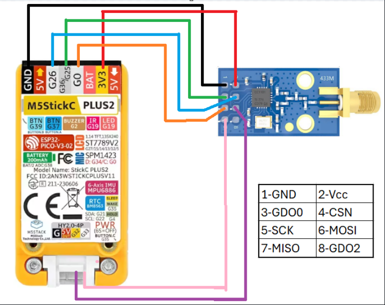
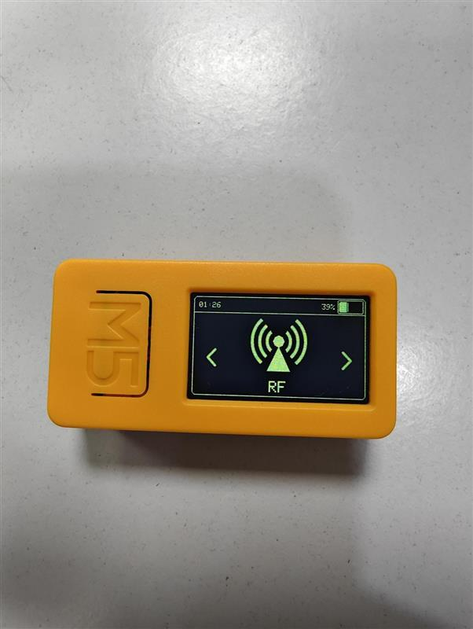
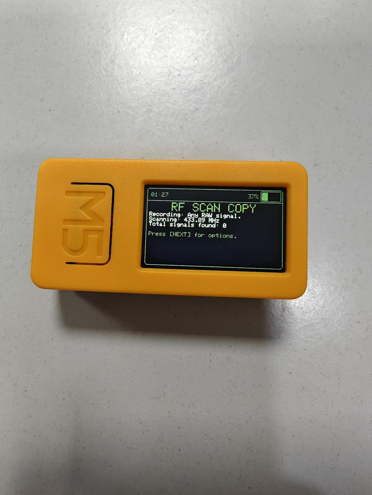

Radio frequency (RF) security is a critical yet often overlooked aspect of modern vehicle security. This comprehensive guide explores advanced RF car key hacking techniques using the M5Stick CPlus 2 and CC1101 module, demonstrating both basic replay attacks and sophisticated jamming-based exploits that bypass rolling code security mechanisms.
Table of Contents
- Attack Overview
- Hardware Requirements
- Firmware Installation
- Hardware Configuration
- Basic RF Attacks
- Advanced Jamming Techniques
- Understanding Rolling Codes
- Defense Strategies
Attack Overview
Car key RF attacks exploit the wireless communication between key fobs and vehicle receivers operating typically on 433MHz or 315MHz frequencies. While modern vehicles implement rolling code security, sophisticated attack techniques can still compromise these systems through signal jamming and capture methodologies [web:68].
Hardware Requirements
The M5Stick CPlus 2 provides an ideal platform for RF security research due to its compact form factor and powerful ESP32-S3 processor, making it perfect for red team engagements [web:64].
Required Components:
- M5Stick CPlus 2: Compact ESP32-S3 development board (~$25)
- CC1101 RF Module: Sub-GHz transceiver module (~$4)
- Jumper Wires: Male-to-female for connections
- M5Burner Software: For firmware flashing
- Alternative: ESP32 can be used but M5Stick offers better portability
Why M5Stick CPlus 2?
The M5Stick CPlus 2 offers significant advantages for RF security operations:
- Portability: Compact design ideal for covert operations
- Display: Built-in LCD for real-time feedback
- Battery: Integrated power source for standalone operation
- Processing Power: ESP32-S3 handles complex RF operations
Firmware Installation
The Bruce firmware transforms the M5Stick into a comprehensive RF security testing platform [web:66].
M5Burner Setup
Download and configure the official M5Stack burning tool:
# Download M5Burner from official source:
# https://docs.m5stack.com/en/uiflow/m5burner/intro
# Installation steps:
# 1. Download and install M5Burner application
# 2. Connect M5Stick CPlus 2 via USB-C
# 3. Launch M5Burner applicationBruce Firmware Installation
Bruce firmware provides comprehensive RF capabilities including capture, replay, and jamming functions:
# Firmware installation process:
# 1. Select Hardware: M5Stick CPlus 2
# 2. Search firmware: "Bruce"
# 3. IMPORTANT: Choose CPlus 2 version (not CPlus 1)
# 4. Download and burn firmware
# 5. Wait for successful installation completionThe burning process typically takes 2-3 minutes. Once complete, the M5Stick will reboot with the Bruce interface.
Hardware Configuration
Proper CC1101 module connection is critical for RF functionality:
CC1101 Connection Diagram
# CC1101 to M5Stick CPlus 2 Wiring:
# VCC (CC1101) -> 3.3V (M5Stick)
# GND (CC1101) -> GND (M5Stick)
# SCK (CC1101) -> GPIO 13 (M5Stick)
# MISO (CC1101) -> GPIO 11 (M5Stick)
# MOSI (CC1101) -> GPIO 12 (M5Stick)
# CSN (CC1101) -> GPIO 10 (M5Stick)
# GDO0 (CC1101) -> GPIO 2 (M5Stick)
# GDO2 (CC1101) -> GPIO 35 (M5Stick)Module Detection Verification
After wiring, verify successful CC1101 detection:
- Boot M5Stick CPlus 2 with Bruce firmware
- Navigate to RF section in main menu
- Access Config feature
- Select RF Module option
- Choose CC1101 Legacy Module
# Successful detection indicators:
# - No error messages displayed
# - Module status shows "Connected"
# - Frequency range displays correctly
# - Signal strength meter appears activeBasic RF Attacks
Once hardware is configured, we can perform fundamental RF security tests [web:65].
RF Signal Scanning
Begin by scanning for active RF signals in the environment:
# Scanning procedure:
# 1. Main Menu -> RF -> Scan
# 2. Set frequency range (typically 433MHz for most car keys)
# 3. Activate scanning mode
# 4. Monitor for signal activity
# 5. Frequency adjustment available if neededBasic Replay Attack
For older vehicles without rolling code protection, simple replay attacks can be effective:
# Replay attack process:
# 1. Position device near target vehicle
# 2. Initiate capture mode on M5Stick
# 3. Trigger victim's key fob (unlock/lock)
# 4. Capture and analyze signal
# 5. Execute replay when center button pressed
# 6. Options: Save, Replay, or Delete captured signalThe captured signal can be immediately replayed or saved for later use. However, this basic technique has significant limitations against modern security systems.
Understanding Rolling Codes
Modern vehicle security implements sophisticated protection mechanisms that prevent simple replay attacks [web:68].
Rolling Code Mechanics
# Rolling code security features:
# - Unique code for each transmission
# - Cryptographic seed values
# - Synchronized counters between key and car
# - Time-based validation windows
# - Anti-replay protection mechanismsWhen a key fob button is pressed, the system generates a unique code that will never be used again. Even if an attacker captures this signal, replaying it will fail because the vehicle expects the next sequential code in the rolling sequence.
Advanced Jamming Techniques
Sophisticated attackers can bypass rolling code security through signal jamming and capture techniques.
Dual-System Attack Architecture
The advanced attack requires two coordinated RF systems:
- System 1: RF Jammer - Creates interference preventing signal from reaching vehicle
- System 2: RF Receiver - Cleanly captures the jammed signal for later replay
Attack Execution Flow
# Advanced jamming attack timeline:
# T+0s: Position systems near target vehicle
# T+1s: Activate RF jammer on target frequency
# T+2s: Victim attempts to unlock vehicle
# T+3s: Jammer creates interference for car receiver
# T+4s: Our clean receiver captures the signal
# T+5s: Vehicle fails to unlock (victim unaware)
# T+Later: Victim drives away, locks vehicle normally
# T+Much Later: Replay captured signal to unlock vehicleTechnical Implementation
The attack exploits the difference in signal reception quality:
# Signal interference mechanics:
# - Jammer creates garbage noise for vehicle receiver
# - Our receiver positioned for optimal signal capture
# - Vehicle fails to receive clean signal
# - We capture the unused rolling code
# - Code remains valid since vehicle never processed itWhy This Works
The fundamental vulnerability lies in the rolling code validation process:
- Code Generation: Key fob generates next rolling code
- Jamming: Our interference prevents car from receiving signal
- Capture: We receive clean signal while car receives garbage
- No Synchronization: Car never processes code, so it remains valid
- Later Replay: Our captured code is still "next in sequence"
Defense Strategies
Understanding these attacks enables better defensive strategies for both manufacturers and users.
Manufacturer-Level Defenses
Advanced Security Implementations:
- Frequency Hopping: Randomize transmission frequencies
- Signal Strength Analysis: Detect anomalous interference patterns
- Dual-Factor Authentication: Require proximity sensors + RF
- Time-Window Validation: Tighter synchronization requirements
- Jamming Detection: Monitor for RF interference during transmissions
User-Level Protections
# Personal security measures:
# - Be aware of surroundings when using key fobs
# - Look for suspicious individuals with electronic devices
# - Use physical key backup when in high-risk areas
# - Consider Faraday pouches for key storage
# - Report unusual vehicle behavior immediatelyDetection Indicators
- Key Fob Malfunctions: Sudden range reduction or inconsistent operation
- Multiple Attempts Required: Needing several presses to unlock
- Suspicious Individuals: People loitering with electronic devices
- Unusual RF Activity: Detected by RF monitoring equipment
Real-World Implications
These RF attack techniques have serious implications for vehicle security and theft prevention.
Attack Sophistication Levels
- Script Kiddie: Basic replay attacks on old systems
- Intermediate: Rolling code understanding and simple jamming
- Advanced: Coordinated dual-system attacks with precise timing
- Expert: Custom hardware and sophisticated signal processing
Future Research Directions
RF security research continues evolving as both attack and defense techniques advance:
- Machine Learning: AI-powered signal analysis and pattern recognition
- Quantum Cryptography: Next-generation key exchange mechanisms
- Mesh Networking: Vehicle-to-vehicle authentication systems
- Behavioral Analysis: User pattern recognition for anomaly detection
Conclusion
RF car key security represents a complex battlefield between attackers and defenders. While rolling codes provide significant security improvements over static systems, sophisticated jamming attacks can still compromise modern vehicles under specific conditions.
The M5Stick CPlus 2 and CC1101 combination demonstrates how accessible hardware can perform advanced RF security research. Understanding these vulnerabilities is crucial for both security professionals and automotive manufacturers working to improve vehicle security.
As vehicle connectivity increases with IoT integration and autonomous features, RF security becomes even more critical. The techniques demonstrated here represent just the beginning of automotive cybersecurity challenges facing the industry.